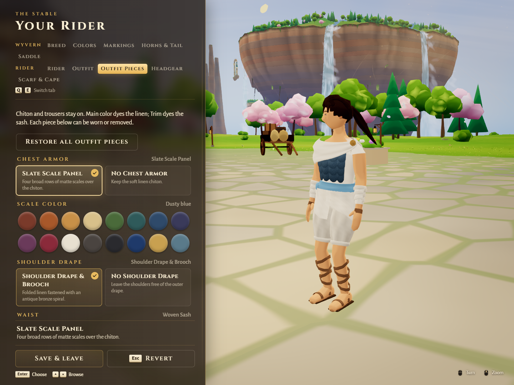
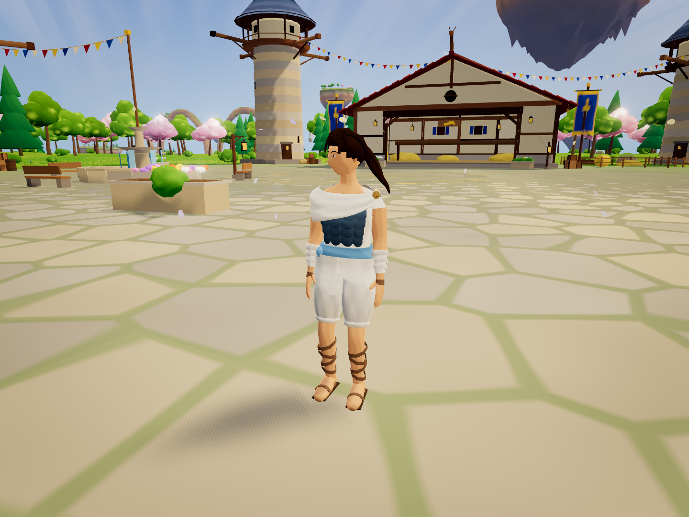
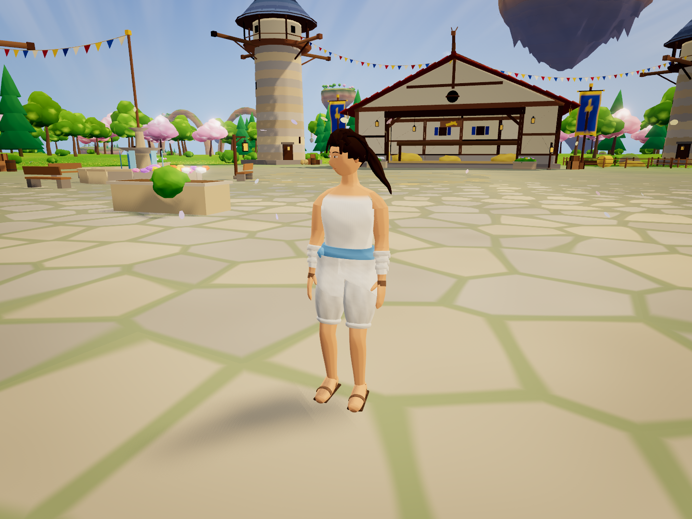
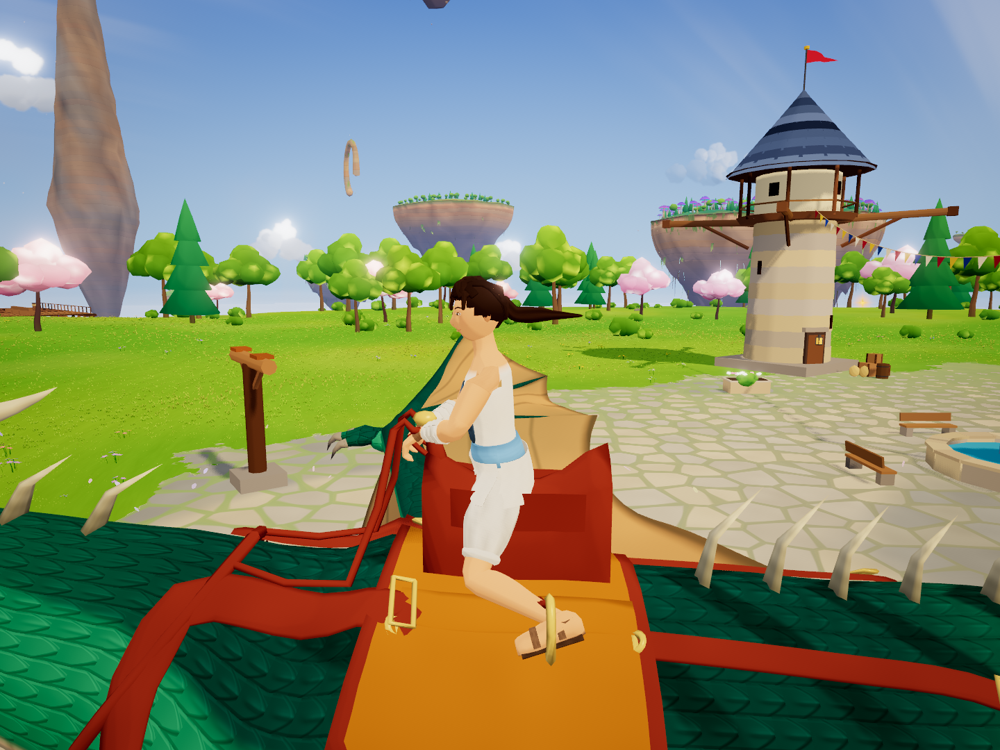
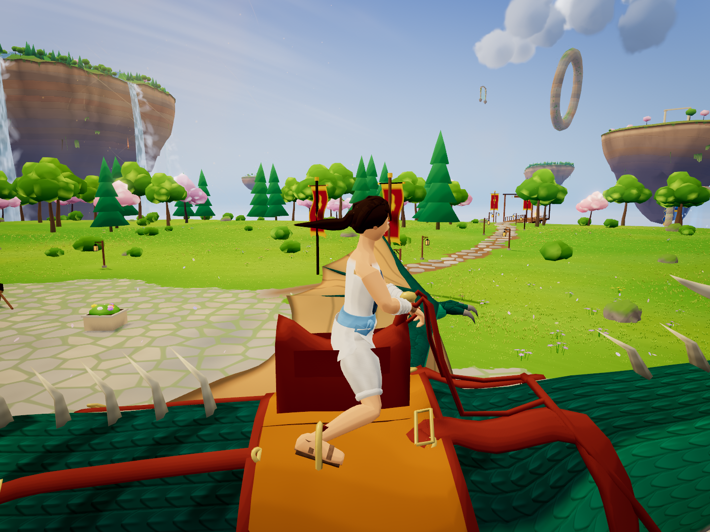

Travel Drape · Outfit pieces
Six selectable pieces plus scale and leather dyes. 24 browser checks passed. The Stable image is the real menu; the four model images are posed actual-engine views, including both mounted sides. Edge SwiftShader checks appearance and integration, not GPU performance.
Exact checks and capture queries
stable full
outfit full
outfit light
mounted left
mounted right